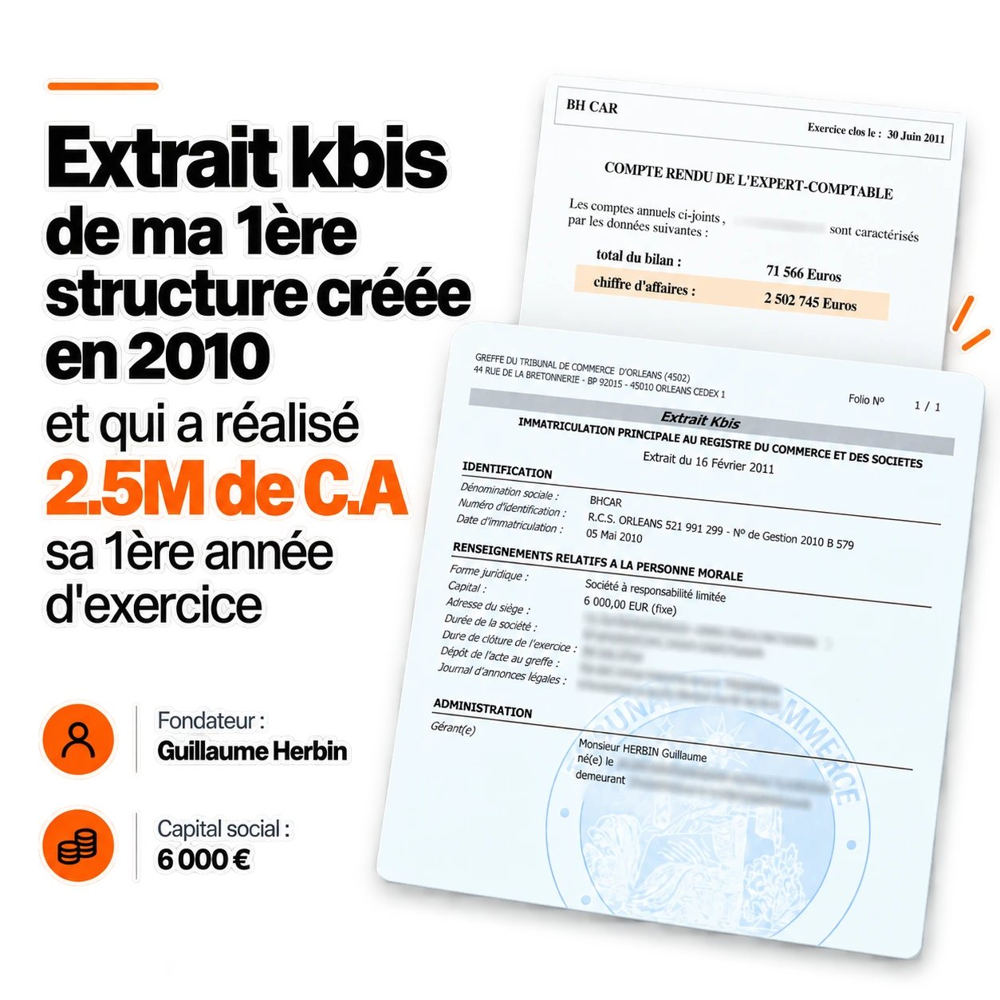
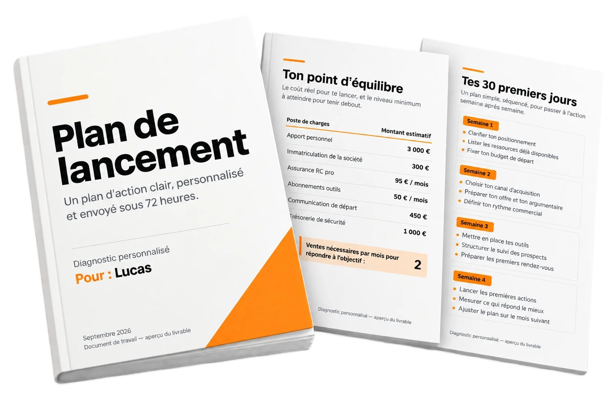

Tu ne sais pas combien il faut vraiment
Stock, local, garantie, assurance… On te parle de dizaines de milliers d'euros avant même ta première vente. Combien mettre, et pour quoi faire ?
1h30 avec moi pour savoir exactement par où commencer, avec quels moyens, et dans quel ordre.

Tu connais les voitures.
Tu sais repérer une bonne affaire.
Tu voudrais en faire ton métier.
Mais dès que tu te renseignes, c'est le mur.
Stock, local, garantie, assurance… On te parle de dizaines de milliers d'euros avant même ta première vente. Combien mettre, et pour quoi faire ?
Achat-revente, intermédiation, dépôt-vente. Temps plein ou complément. Un forum dit une chose, un vendeur dit l'inverse, YouTube te propose dix modèles.
Mauvais modèle, mauvais prix, mauvais timing. Une erreur au départ peut coûter cher, et tu ne sais pas si ça sera rentable avec ta situation à toi.
Personne ne répond à ces questions-là.
On te vend des méthodes, des chiffres d'achat et de revente, et des promesses.
Moi je réponds à ta situation.
5 questions, deux minutes. Tu ne paies rien à cette étape.
En 2010, je me suis lancé à 21 ans avec 3 000 €.
Pas de formation en commerce automobile, pas de connaissance en mécanique,
pas d'expérience commerciale.
Depuis, j'ai construit un réseau de plus de 100 agences automobiles à partir de zéro, et j'ai vu passer des milliers de véhicules et plusieurs centaines de personnes qui apprenaient ces métiers, du commerce automobile à l'intermédiation.
J'ai vu qui réussissait. J'ai vu qui abandonnait au bout de six mois.
Et j'ai fini par comprendre que ça se joue presque toujours sur les trois ou quatre
décisions du départ.
C'est là-dessus que je travaille avec toi.

« Il m'a aidé à poser les bonnes bases, à éviter certaines erreurs et surtout à construire une activité qui me ressemble. Aujourd'hui, plusieurs années après, je vends une dizaine de voitures par mois, je vis pleinement de mon activité et je suis toujours seul. »
« Il ne m'a jamais vendu le rêve de l'entrepreneuriat. Au contraire. On a parlé risques, trésorerie, erreurs possibles, organisation… et ça m'a justement permis de prendre ma décision en sachant où je mettais les pieds. »
« Je suis parti de zéro, tout seul et sans stock. Je pense que je me serais lancé même sans lui, mais une chose est sûre : je ne serais pas allé aussi vite et j'aurais fait un paquet d'erreurs en chemin. »
« Il ne m'a pas appris mon métier. Il m'a appris à regarder mon activité autrement. Aujourd'hui, le plus gros changement n'est même pas que je vende davantage. C'est que je sais ce que je gagne. »
Ces personnes ont été accompagnées par moi sur la durée, avant que ce diagnostic n'existe. Aucune n'est franchisée d'un de mes réseaux. Témoignages publiés avec leur accord.
5 questions, deux minutes. Paiement uniquement si ton profil correspond.
On passe en revue ta situation réelle : ton capital disponible, ton temps, ton expérience, ta zone géographique, tes contraintes.
Achat-revente, intermédiation, dépôt-vente, mandat, complément de revenus ou activité principale. Il y a une réponse adaptée à ta situation, et elle n'est pas la même pour tout le monde.
Ton apport nécessaire, ton point d'équilibre, le nombre de ventes par mois pour que ça tienne debout. Pas de théorie, des chiffres concrets.
Un dossier personnalisé que je t'envoie sous 72 heures : ce que tu fais, dans quel ordre, avec quels montants. Tu le gardes, même si on ne retravaille jamais ensemble.

490 € TTC, réglés au moment où tu choisis ton créneau.
Ce que je te donne, c'est 16 ans d'expérience appliqués à ta situation, en une séance, pour t'éviter les erreurs qui coûtent cher.
Dans ces quatre cas, ne réserve pas. On perdrait notre temps tous les deux.
1
Deux minutes. C'est ce qui me permet de vérifier que je peux t'être utile et de préparer la séance.
2
Si ton profil correspond, tu reçois un lien pour choisir ton créneau et régler les 490 €. 1h30 en visio, au moment qui te convient.
3
Pas de présentation. Je passe en revue ta situation réelle : on tranche le modèle, on chiffre, on pose les bases. Tout est noté.
4
Sous 72 heures, ton plan d'action écrit : ce que tu fais, dans quel ordre, avec quels montants. Il est à toi.
5
Avec un plan clair et des chiffres précis. Seul, ou avec moi dans l'accompagnement Forge sur plusieurs mois. On en parle après le diagnostic, jamais avant.
Parce que c'est 1h30 de mon temps, plus la préparation, plus un plan d'action écrit derrière. Et parce qu'un diagnostic gratuit n'engage personne, ni toi ni moi.
Non. Le règlement se fait à la réservation.
Si dans les 15 premières minutes je vois que je ne peux rien t'apporter, on arrête et je te rembourse.
Oui, et c'est même souvent la meilleure façon de commencer. On en parle pendant la séance, contrat de travail compris.
Elles vendent une méthode à tout le monde. Moi je regarde ta situation et je te dis ce qui s'y applique, y compris quand la réponse est « ne te lance pas maintenant ».
Non. Aucun lien, aucune enseigne à rejoindre, aucune commission derrière et aucune affiliation.
Le cadre juridique et fiscal dont on parle est français. Si tu es ailleurs, dis-le dans le formulaire et je te dirai honnêtement si ça vaut le coup.
Laisse ton email, je t'envoie le calcul de marge réel sur une voiture, ligne par ligne. C'est le document que j'aurais aimé avoir avant mon premier achat.
1h30 en visio, une trame précise, et un plan d'action écrit que tu gardes. Ça commence par 5 questions.